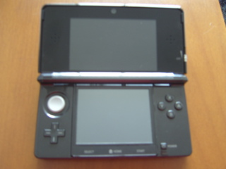
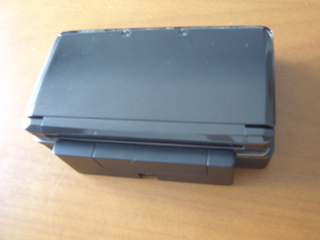

A blind person, plus a 3DS, equals... What?
I don't really know yet. But the point is... I bought a 3DS.

I wasn't interested in any of its games in particular, but as my five years old DS Lite's buttons (mainly the arrow keys and the "A" button) are becoming loose, I was starting to consider doing an upgrade. My plan was to get the new console maybe next year, but I found a cheap 3DS in a store near home. "Cheap" in way of speaking, because here in Brazil, things like games are very expensive. My 3DS cost R$479 (roughly $236.70 USD). No, it's not the 3DS XL, it's the normal 3DS. And this was the cheapest brand new one I could find. The XL was just released here in Brazil, costing around... R$1200 (roughly $590 USD!). In other words, too expensive.
Here is my review of the 3DS:
Packaging
The box it came in is so big that it could fit two 3DSs. The instruction manuals had more volume than the console itself.


SD Card
Before getting the 3DS, I had heard that SD cards were needed to store pictures, sounds and games bought from the E-Shop, and that a 2GB SD card came bundled with the console. When I bought the 3DS, I searched through the huge box, thinking that maybe the card was lost in the middle of those manuals, and nothing. Only later I discovered that it was already placed inside the console. Whoops...
Buttons

Compared to the DS Lite, the button layout is very similar, with the addition of a left analog stick (some people want two, but I wanted none! How I hate analog sticks. I always did. But it's just my personal preference, nothing can be done about that). The arrow keys are located a bit lower compared to the old DS, because of the analog stick. Unfortunately, as with the other DS, the touch screen (the touch sensitive lower screen that is the Ds's "charm" since its first model) is simply unusable by someone without sight. The arrows (on the left), the round buttons ("A", "B", "X" and "Y" on the right), and the shoulder buttons ("L" and "R") are comfortable enough for me, despite being a little hard, probably because the console is still new. The "Start", "Select" and "Home" buttons are a bit hard to find by touch, but I'll get used to it (I hope).
Settings
Something I found interesting is that the configuration screens have detailed, easy to follow instructions. In my opinion, it's very friendly to beginners (and probably more helpful and less boring than those big thick instruction manuals :P).
Games
Normal DS games ran with no problems. I don't have any actual 3DS full 3D game to test yet, but it comes with some minigames so people can get a taste of the 3D features. They are played using the augmented reality card (AR Card) that comes with the 3DS and shows the minigames in 3D. There are other cards that show Nintendo characters posing in 3D, and you can rotate them and take pictures of them. I can't see it, so I can't enjoy it much, but it's interesting knowing that there's something to play with, even before buying any games.

Cameras
Yes, "cameras" (plural). Another feature I don't care much about. And instead of one, it has three. One at the front for taking normal pictures and recording videos, plus two at the back for 3D pictures and videos. The resolution isn't very good (any recent cellphone probably has better cameras than these), but we must consider that the pictures are at the size to be displayed on the 3DS's small screen, specially the 3D ones, which (for now) can only be opened on the 3DS.
The cameras are also used to interact with the AR cards for playing the minigames.
Sound
The 3DS can work as a music player, with visualizations and everything. It plays MP3, as well as AAC files with ".3gp" and ".m4a" extensions. It can also record short sound clips through its microphone and apply some effects to the audio files in the supported formats, like changing pitch and speed.
The speakers are the typical portable device speaker quality, so to get most out of the audio in the games and music, it's best to use headphones or plug the 3DS to some external speaker. However, in the case of headphones, unlike the DS lite, both the phone's and the 3DS's volume must be at the maximum in order to hear things at an acceptable volume (i.e. not too low nor too high), so the use of headphones probably won't help to preserve the battery's life. Speaking of that...
Battery Life
As I already had heard, the battery life is a bit disappointing. I don't know how long recent gadgets' batteries should last, so I'm not one of the best people to talk about this, but my 3DS's battery lasts the same, if not less, than my DS Lite's. Even with the wireless and the 3D turned off, the brightness setting at the minimum, and sound at half the volume (as I can't see, a game without sound is the same as nothing), the battery lasts six hours at most.

Overall
Aside from the short battery life and the low sound volume with headphones (and the left analog stick), I'm satisfied with the console overall. I can't enjoy the 3D, nor have any full 3D game to test yet (aside from the included minigames), but I already bought it knowing my limitations so these results were expected for the most part. As long as my old DS works, the two will be good companions. I can finally evolve trade my pokemon between the two DSs now :P.